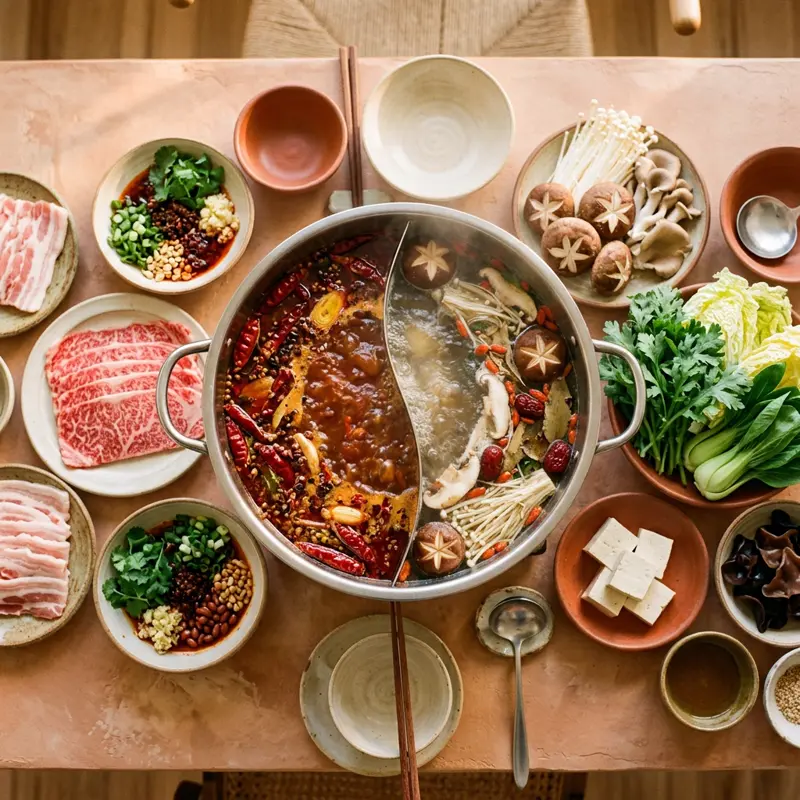

대만은 1인용 훠궈(개인 냄비) 문화가 특히 발달해 혼자서도 부담 없이 즐길 수 있어요. 마라탕처럼 매운 스타일부터 사골·토마토 베이스의 순한 육수까지 다양하고, 무제한 사이드바를 제공하는 곳도 많습니다.
무엇이 특별할까요?
01
1인 훠궈
1인용 미니 냄비로 나오는 곳이 많아 혼밥 여행자에게도 부담 없어요.
02
육수 반반 선택
매운맛과 순한맛을 반반으로 나눈 원앙궈(鴛鴦鍋)를 시키면 취향껏 즐길 수 있어요.
03
무제한 바
일부 매장은 음료·아이스크림·소스바가 무제한이라 가성비가 좋아요.
이렇게 즐겨보세요
- ✓혼자 여행 중이면 '개인 냄비' 제공 여부 먼저 확인
- ✓매운 정도(小辣/中辣/大辣)를 주문 시 미리 정하기
- ✓고기 무한리필 매장은 시간제한이 있는 경우가 많음
- ✓서비스 차지(10%)가 별도로 붙는 곳이 대부분
Real spots
전체 화면 지도로 보기 →
여행자들이 등록한 진짜 맛집
이 카테고리에 실제로 등록된 맛집을 지역별로 모아봤어요. 새로 등록되면 여기에도 바로 반영돼요. 핀을 눌러 추천 투표도 남길 수 있어요.
📍타이베이
📍타이중
📍타이난
📍이란
Join the map
지금 등록하기 →
나만의 맛집을 공유해주세요 🤫
여러분의 발견이 다른 여행자들에게 진짜 대만을 경험하게 해줍니다.